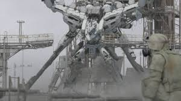
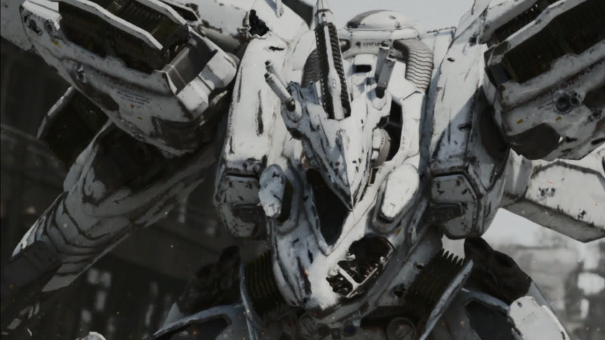
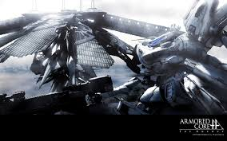

自分のゲーム原点
自分のゲームの原点はARMORED CORE fAだと思います。
このゲームがあったからこその今のゲームスキルがあるのだと強く思います。
ゲームの説明を簡単にするとネクストと言われるロボットを自分でカスタマイズして戦うゲームです。
簡単そうに聞こえますがまぁ～難しい！まばたきした瞬間に目の前にいた敵がいなくなるほどハイスピードバトルです。
(そもそも15ｍ級のロボットが大気圏内で棒立ち状態からワンアクションで第二宇宙速度超えるってなんだよ...)
あと敵AIがとても強く、強くなりすぎた学習AIラインの乙女（Dir Frau der Rhein）と呼ばれる敵もいました。
(あと普通に一対多を強いられます。更にチュートリアルがない)
このラインの乙女はAI育成要素ができたときにプレイヤーが育成して大会に出場したのが初出です。
プレイヤーを軒並み倒してAIが準優勝しました。やべぇ。そしてゲームに逆輸入されたラインの乙女は運営の手により更に強くされました。
このゲームこそが自分の原点だと思います。



PAGE TOP